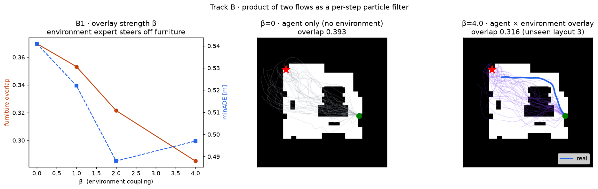
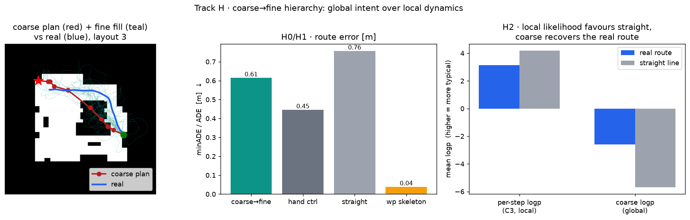
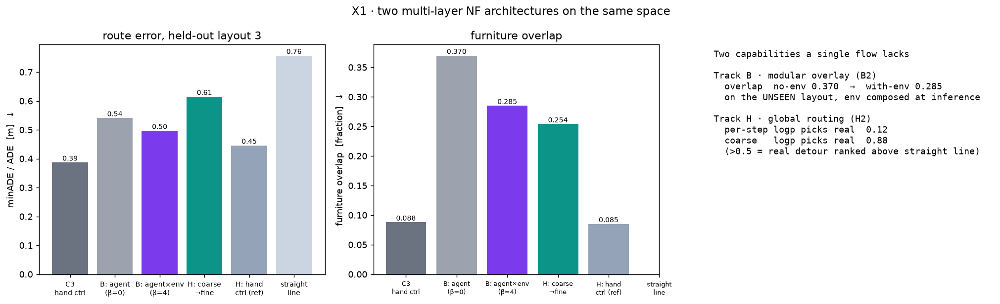

親 LocoVR-NF(実住宅の導線尤度で家具配置を採点・再設計)の2フローを、横並びから縦積みへ。「配置・デザインを決めるNF」と「実際に人がどう動くかのNF」を別々に保ちつつ、同じ座標空間で合成すると、単層NFには出せない出力が得られるかを検証する。
要旨:LocoVR-NF は同じ空間の上に、性質の違う2つのNFを別々に持っていた——環境層 p(居場所｜占有)(レイアウトが決める foot-traffic 場)と、行動層 p(次ステップ｜goal)(実際の歩き方)。本ページはこの2つを縦に積む2つのやり方を検証する。トラックB(積)=各ステップで行動層が提案し環境層が再重み付けするパーティクルフィルタ。未知レイアウトで、後付けの環境層が家具重なりを23%下げる(層を再学習せず推論時に合成するだけ=モジュール性)。トラック粗→細(階層)=大域ウェイポイント計画のフローの下に局所ステップのフローを積む。C3で per-step 尤度が失敗した「実迂回 vs 家具貫通の直線」の判別を、粗フローの経路尤度が回復(実経路を上位にする割合が 16%→82%、全4レイアウトで反転)。各図に観察と解釈を併記し、効かなかった点(粗→細は明示clearanceの手製コントローラを超えない)も正直に記す。
観察:LocoVR-NF は同じ座標空間に2つのNFを別々に学習済み。環境層 E AffordanceFlow=p(居場所｜占有) はレイアウトが決める「人が湧く場」を、行動層 U StepFlow=p(次ステップ｜占有,goal,速度) は実際の経路の引かれ方を表す。ただし E は位置の密度、U は変位の密度で、素朴には掛け算できない。
だから何が言えるか:多層化の本質は「結合層を深くする(表現力)」ではなく、意味の違う層を分けて合成すること。位置 vs 変位の非対称の解き方が2トラックを分ける——Bは各ステップで積を取るフィルタ、粗→細はスケールで縦に分ける。

観察:エージェント(StepFlow)が各ステップで候補を提案し、環境専門家(AffordanceFlow)が各着地点を weight ∝ exp(進捗/τ + β·logp_E) で再重み付けする。エージェント・環境とも未知レイアウト3を除く3配置で学習し、手製の clearance 場は使わない。(左)β を上げると家具重なり(橙)が 0.370→0.285 と単調に下がり、minADE(青)も悪化しない。(中)β=0 は環境を見ないので経路(灰)が家具島を突っ切る(重なり0.393)。(右)β=4 は環境層が経路を歩行域へ寄せ(重なり0.316、実経路=青)、未知レイアウトで再ルーティングする。
| β(環境結合) | minADE [m] ↓ | 家具重なり ↓ | 到達成功率 ↑ |
|---|---|---|---|
| 0(環境なし) | 0.541 | 0.370 | 0.797 |
| 1 | 0.522 | 0.353 | 0.839 |
| 2 | 0.488 | 0.322 | 0.800 |
| 4 | 0.497 | 0.285 | 0.737 |
だから何が言えるか:環境密度は占有条件付きなので、一度学習すれば未知レイアウトの占有を入れるだけで新しい家具を避ける。エージェントを一切再学習せず、推論時のオーバーレイだけで動線を引き直せた(B2:未知レイアウトで重なり23%減)=あなたが描いた「同じ空間に別のNFを重ねる」を実現。到達成功率は 0.74–0.84 で保たれる(高βでやや低下=環境を重んじるほど遠回りになる、正直な傾向)。主張は生成の重なり・minADE に置き、per-step 尤度では主張しない。

観察:スケールの違う2フローを縦積み。粗フロー p(次ウェイポイントへのオフセット｜占有,goal) が大域計画を、細フロー(既存StepFlow)がウェイポイント間を歩く。ウェイポイント=実軌跡の転回点。(左)粗計画(赤)が中央家具島の回り込みを大域的に決め、細充填(青緑)がその間を埋める(実=青)。(中)route error:骨格 0.04m、粗→細 0.61m、直線 0.76m、手製コントローラ 0.45m。(右)H2 の核心——per-step 尤度では実経路(青)が直線(灰)より低い(C3の再現)が、粗フロー尤度では実経路が直線をはっきり上回る。
| 指標(4分割 LOO 平均) | 値 | 判定 |
|---|---|---|
| H0 · ウェイポイント骨格 ADE [m] ↓(vs 直線 0.89) | 0.047 | ✅ 直線を下回る |
| H1 · 粗→細 minADE [m] ↓(vs 直線 0.89) | 0.682 | ✅ 直線を下回る |
| H1補足 · 手製コントローラ minADE [m] | 0.547 | ⚠ 粗→細は未達(明記) |
| H2 · 粗尤度で実経路が上位の割合 ↑ | 0.82 | ✅ 大域識別を回復 |
| H2対照 · per-step尤度で実経路が上位の割合 | 0.16 | —(局所は失敗=C3) |
だから何が言えるか:A1/A2/C3 で3回躓いた「局所per-step尤度は大域導線を測れない」(C3では直線の方がper-step尤度が高かった)を、粗フローの経路尤度が構造で回復した。per-step は実迂回を16%しか上位にしないが、粗フローは82%上位にする——しかも全4レイアウトで一貫して反転(各分割 0.68–0.88)。これは per-step 密度には原理的に出せない大域出力。
正直な未達(H1補足):粗→細の生成は直線基線を超えるが、明示的な clearance 判定を持つ手製コントローラ(minADE 0.55m)には届かない(粗→細 0.68m)。細の脚は硬い障害物テストを持たないため角を切り、家具重なりも手製より多い。Track H の固有貢献は手製プランナの出し抜きではなく H2(大域識別)——ここは gate に boolean で残し隠さない。

観察:未知レイアウト3で6手法の route error と家具重なりを比較(左・中)。生成分布の質は B(agent×env)と 粗→細 で同程度、いずれも直線を下回り、明示clearanceを持つ手製系(C3・H hand ctrl)がやや低い。(右)各トラックが足す固有能力:B2=未知レイアウトで環境層を推論時に重ねて重なり 0.370→0.285、H2=粗尤度が実経路を 0.88 の割合で上位(per-step は 0.12)。
だから何が言えるか:2トラックは同等の経路分布を生むが、Bは推論時の層差替(モジュール性)、Hは大域経路識別という別々の能力を足す=相補的。粗フローの下層(細)に積Bの環境専門家を差せば、縦(大域/局所)×横(環境×行動)の三層になる(X2=次段)。「勝ち負け」ではなく能力の差で並べるのが本研究の要点。
A1/A2/C3)。B・H とも経路品質の主張は生成分布の minADE と家具重なり率のみ。per-step 尤度ランキングでは主張せず、H2 はむしろ「per-step が失敗する」ことを対照に使う。cd LocoVR-NF && export PYTHONPATH="$PWD"
uv run --no-project python -m locovrnf.filter --holdout 3 — B0/B1/B2(~7分)uv run --no-project python -m locovrnf.coarse --holdout 3 --loo — H0/H1/H2/H3(~7分)uv run --no-project python -m locovrnf.compare — X1詳細は MULTILAYER.md、設計の元文書は ../future-plan/multilayer-nf-experiment-plan.md。親プロジェクト = LocoVR-NF。